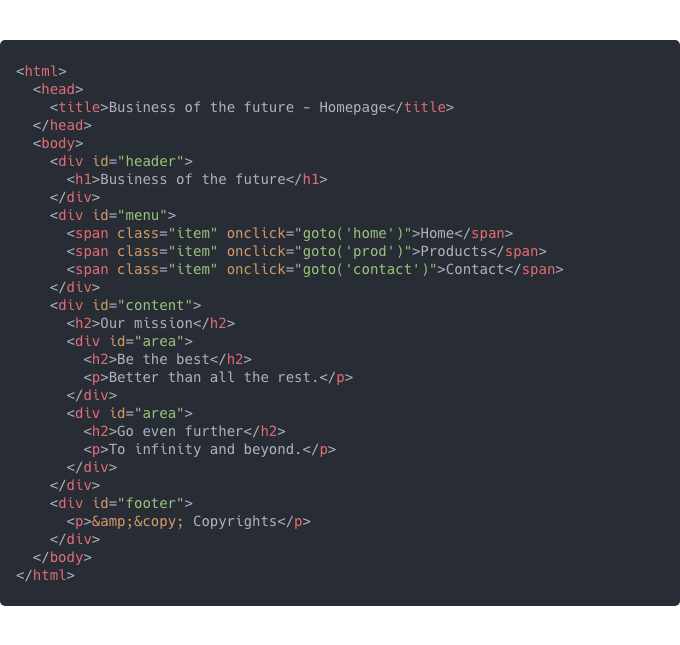
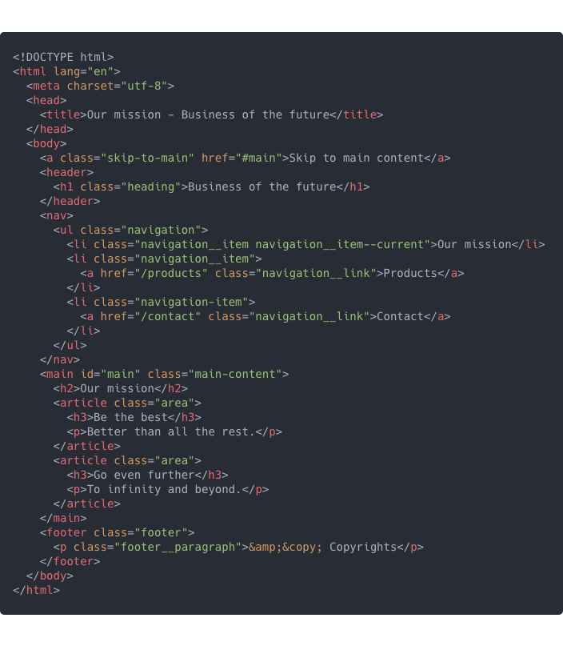
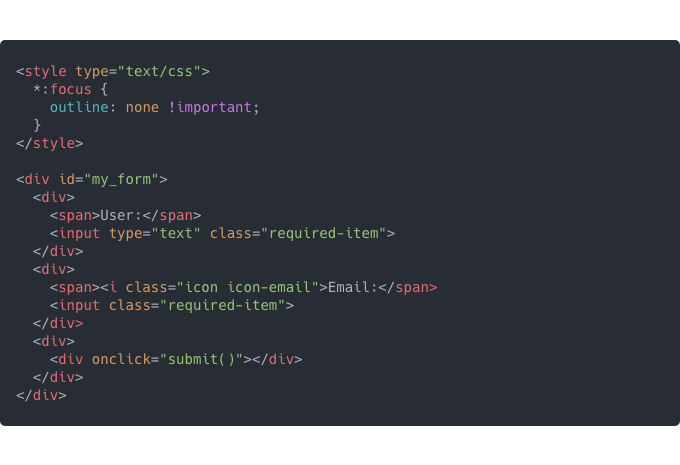
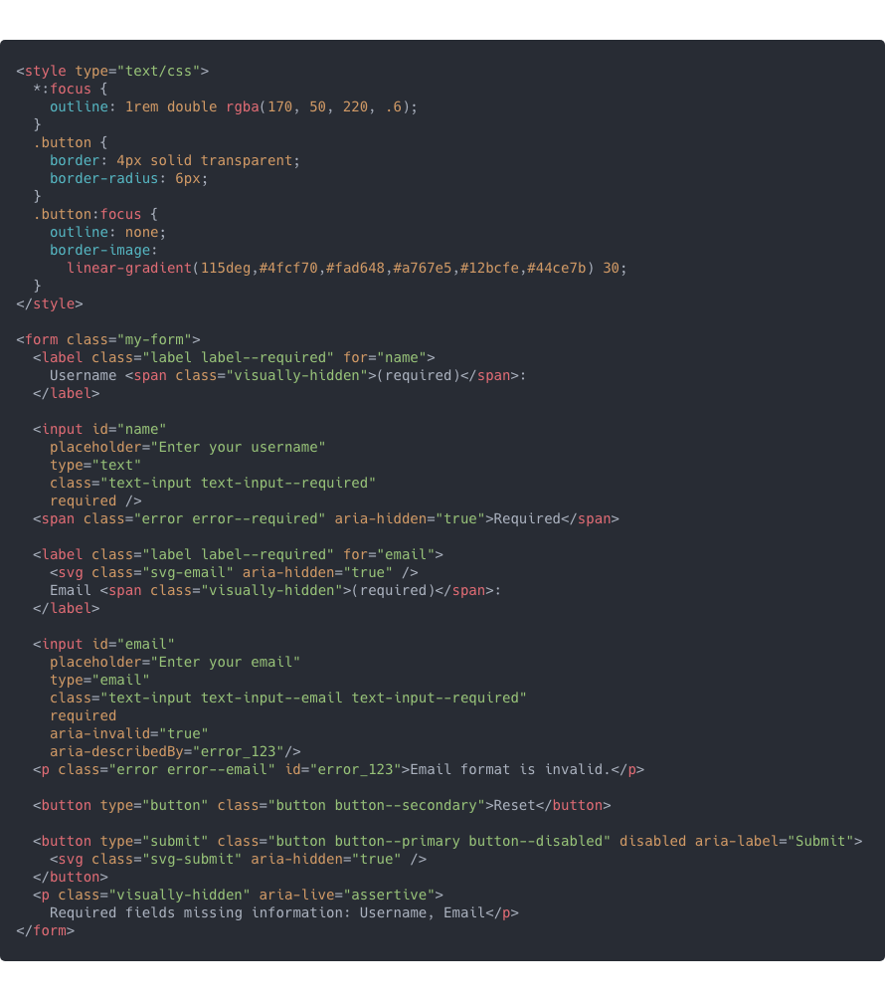

Previously I wrote about why we need to use semantic HTML. Now, most of the internet services we are developing are no longer just webpages, but dynamically structured Web Apps*. Still, those apps use HTML and CSS for user interfaces in the browser. Below I have outlined my heavily opinionated conventions on this matter at this particular moment in time.
* As I see it, we should think about the term “Web App” as constantly evolving ideas and technologies for services running in a browser.
It might not be a good way to design a component – and overall the collection of your components – based on the semantic HTML structure. You should be more focused on designing the component API* and hide the complexity of each solution behind an abstraction. If you feel that you spend more time designing the specifications for component usage than creating simple implementations in the component itself, you could be on the right track. Overall spending time in the configuration of your project and component-libraries (after the initial POC**), is very healthy if it saves you time and complexity when creating and maintaining the main source code itself.
* Defining Component APIs in React, Brent Jackson
** Spikes, POCs, Prototypes and the MVP, Leigh Garland
I admit that it is also a bit harmful to the developer ecosystems to hide basic HTML semantic and basic accessibility implementations behind abstractions. But would you rather your app has a solid foundation for the client or has more mistakes that end up in production for everyone to learn from?
This leads me to ponder, can someone be a fullstack developer without an understanding of basic HTML semantics? There are people titled as fullstack developers maintaining frontend code without much knowledge of the DOM API* or modern JavaScript**. To make sure your UI component (and library of components or the complete app) is going to be accessible, your implementations should take responsibility, not the interface. When your component’s interface is really good, you can fix and change the implementation without modifications to the interface. So actually your component’s first version doesn’t need to be the most accessible version. You can pass it on for validation and testing – even for usage at development stages. And during the upcoming iterations, you have the chance to implement more detailed accessibility.
* Document Object Model (DOM), MDN Web Docs
** Functional programming in JavaScript, Fun Fun Function, Mattias Petter Johansson
What you see is not what you get
At the current moment you cannot rely on libraries and frameworks to handle your app’s accessibility. There are a few accessibility-centered user interface libraries, but their implementations are also based on opinions. The basic HTML5 semantics are standard and have good support with browsers, but with screen readers (or other less common tools) you might feel like you’re developing websites to support IE6 all over again.
Use coding frameworks mainly for their designed abstractions – not so much to generate imperative source for UI. Return components with fragments, arrays or other variables (based on the API of the library you are using) when no semantic structure is needed – and non-semantic HTML structure only when needed for visual layout and styling.
Testing with tools
Only about 30-40% of accessibility issues are found by automated testing. Still using tools for accessibility testing is a good way to prevent some of the errors and educate developers what and why to improve. Some great tools I can recommend are Axe (Jest-axe and React-axe), Lighthouse and Accessibility Insights. Also you can learn manual testing by using a screen reader like VoiceOver (macOS, iOS) or NVDA (Windows). Some accessibility testing can also be done with design tools using a plugin like Stark (Adobe XD, Figma, Sketch).
Taking steps forward – To fix this:
- Use HTML5 DOCTYPE declaration.
- The primary language of content must be identified accurately on the html-element.
- If your page title contains unique information about the current view, it should come first. The title should be consistent with the main content. The title must be updated when the url-path changes.
- If you have a lot of content in the page before the main-content, add a ‘Skip to main content’-link that can be hidden when not focused with the keyboard (https://axesslab.com/skip-links/).
- Replace divs with HTML5 semantic tags. All elements’ ID’s should be unique – use CSS classes for styling.
- All text should be contained within a landmark region (header, nav, main, footer, aside etc.). Use minimum instances of landmarks.
- Use list elements for lists.
- If you use link-tags for your navigation – not buttons – screen readers can get to your navigation by browsing all links on the page. (This is an exception to the rule that buttons should be used when a user action changes view within the app)
- Use heading levels correctly, do not skip levels (for example from h1 to h3). Each view should have only one h1. Screen readers are also using headings to navigate through the page.
- Use CSS for visual styling.

And to fix this using aria-attributes*:
* ARIA is not a replacement for semantic HTML

- If you disable focus outline provide an alternative working solution, do not completely disable :focus styles.
- Use CSS-classes for visual styling.
- Use label with for-attribute with the correct id-attribute in the input-element. Id’s should be unique within the rendered HTML page.
- Use aria-hidden for visually displaying information that is already defined by aria.
- Use buttons for user actions, not clickable divs. Buttons can have proper type-attribute.
- Use Aria-required and HTML5 required -attributes. Most current web browsers automatically set the aria-required value to true when the HTML5 required attribute is present.
- Submit button is disabled when required inputs are empty or invalid. Change disabled to false when corrected.
- Submit button has aria-label (SVG-icon for visual presentation) and assertive text describing why it is disabled.
- Visually placed error-texts are hidden from a screen reader. If you don’t need to support IE-era browsers you can also more safely use an aria-label instead.
